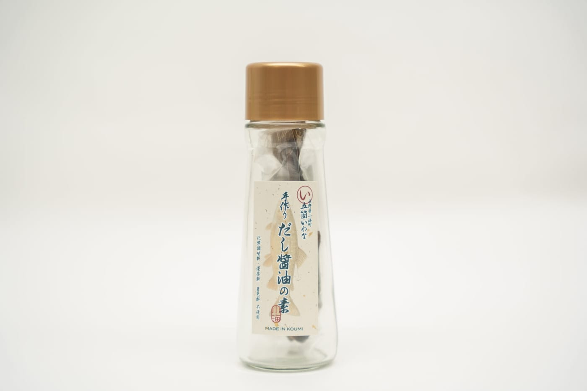
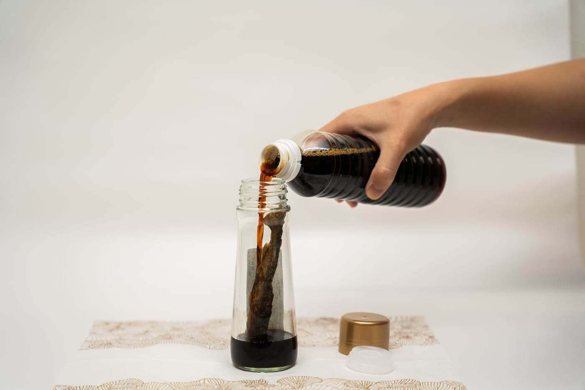
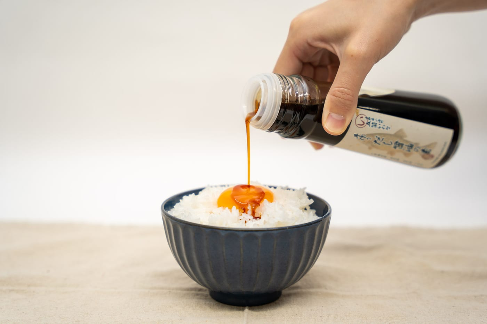
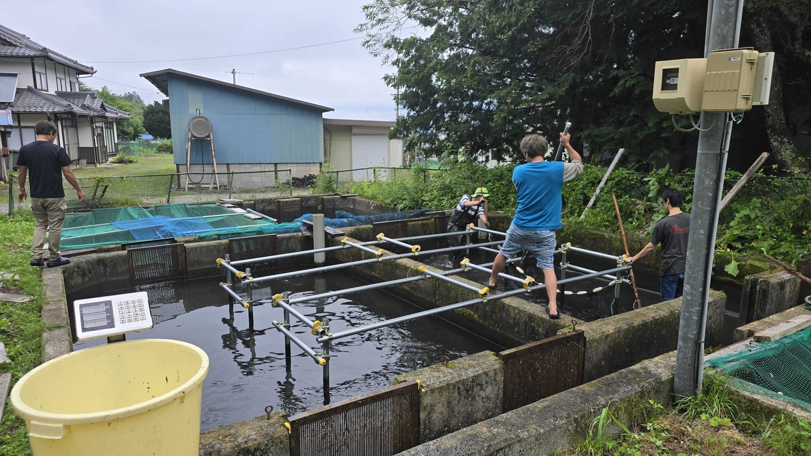
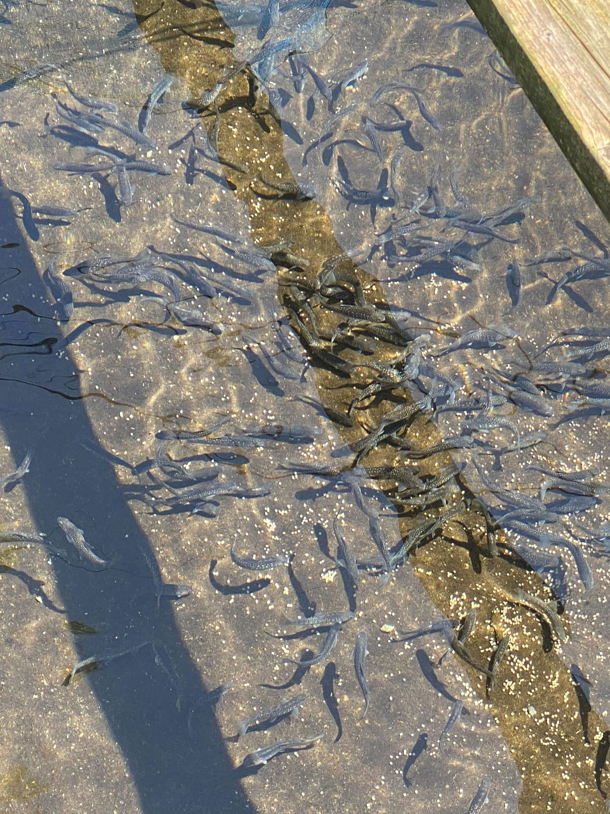
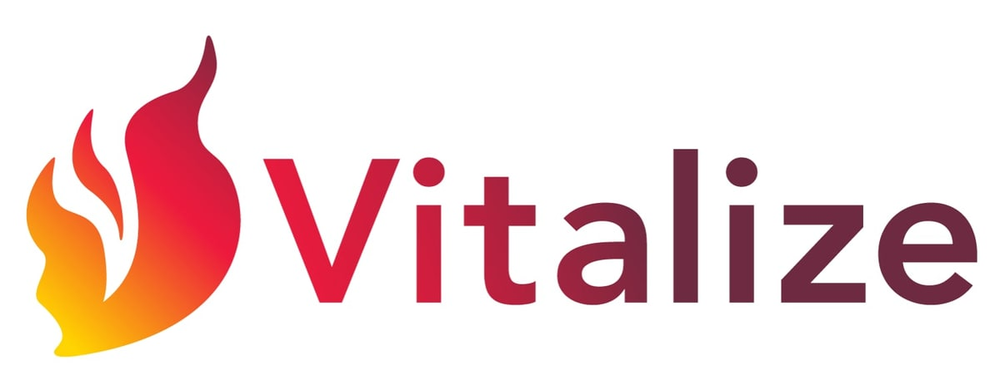

「ゲームの熱狂を、地域の力に。」 e活プロジェクトに、また一つ素敵なご縁が生まれました。
この度、「日本を活性化する集団」として全国で地方創生に取り組む株式会社Vitalize様より、本プロジェクトへのご支援として特製の「五箇いわな手作りだし醤油の素」をご提供いただきました！

【ご提供いただいた商品のご紹介】
八ヶ岳の澄んだ湧水で育ったイワナを贅沢に使用した「五箇いわな手作りだし醤油の素」。瓶にお好みの醤油を注ぐだけで、香ばしく旨みたっぷりの『だし醤油』が完成します。卵かけご飯はもちろん、冷ややっこやうどん、炒飯にも。さまざまな料理を格上げする万能な一品です。


【株式会社Vitalize様について】
「少子高齢化」や「東京一極集中」といった日本の課題を、事業を通じて解決することを目指す企業様です。システム開発などのITエンジニア事業を軸としながらも全国に支社を展開し、長野県の小海支社では豊かな自然環境を活かした「イワナやチョウザメの養殖」を行うなど、まさに“現場からの地方創生”に本気で取り組まれています。


今回いただいたお品物は、今後e活が協賛するコミュニティ大会での特別賞品や、公式ミラー配信パートナーのVTuberによる食レポ企画などで、大切に活用・発信させていただきます。
ITと地域資源の掛け合わせで挑戦を続けるVitalize様の想いを、eスポーツやVTuberコミュニティの熱量に乗せて全国へ届けていきます。Vitalize様、この度は温かいご支援を誠にありがとうございます！

▼ 株式会社Vitalize 小海支社様 LP（地方創生の取り組みはこちら！） https://koumi.vitalize.co.jp/
▼ 株式会社Vitalize様 公式ブログ（日々の活動や想いを発信中！） https://www.vitalize.co.jp/blogs
▼ 株式会社Vitalize 小海支社様 公式Instagram https://www.instagram.com/vitalize_koumi_official/
▼ 株式会社Vitalize様 採用HP
https://recruit.vitalize.co.jp/